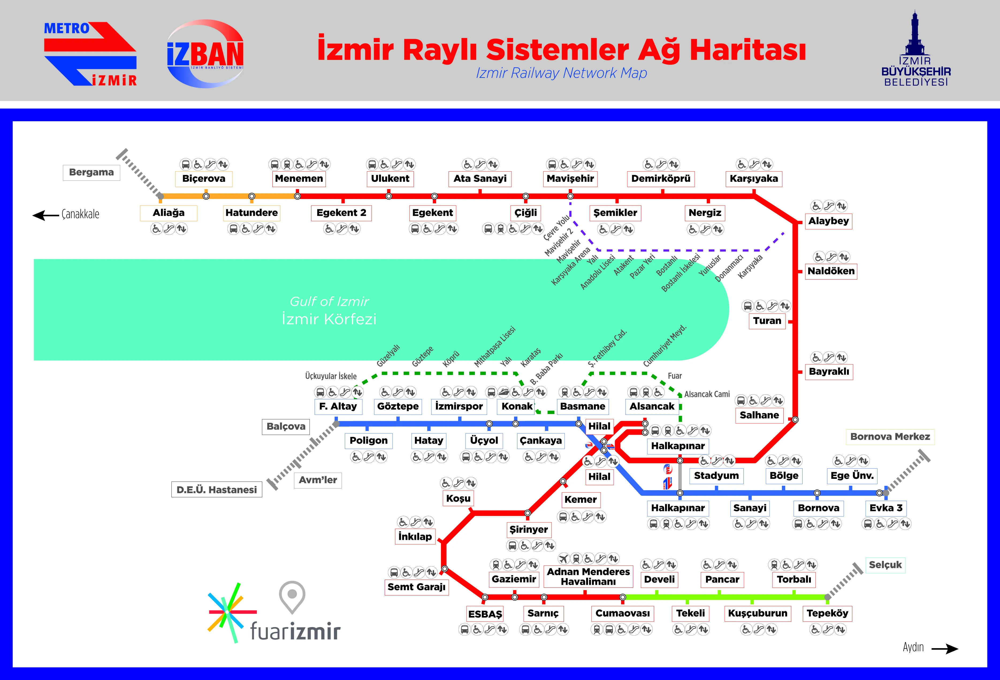

İZBAN Hakkında
İZBAN, İzmir'in en uzun raylı sistem hatlarından biridir. 2010 yılında açılan hat, Aliağa'dan Selçuk'a kadar uzanır ve toplam uzunluğu 136 km'dir. İZBAN, ESHOT ve İzmir Metro ile entegre olarak çalışır.

Hat Bilgileri
| Hat Uzunluğu | 136 km |
|---|---|
| İşletmeye Açılış Yılı | 2010 |
| İstasyon Sayısı | 41 |
| Günlük Yolcu Sayısı | 300,000 |
| Hat Üzerindeki Bölgeler | Selçuk, Torbalı, Menderes, Gaziemir, Buca, Konak, Bayraklı, Karşıyaka, Çiğli, Menemen ve Aliağa |